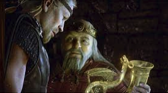

A Few Favorite Movies

Fantastic Performance by Mark Rylance! The Story is set in 1940-50's Chicago and brings you into live stage experience.
The narration, story, subject matter, characters, acting and music are so excellent, you'll hardly notice it all takes
place in one building.

Al Pacino and Keaunu Reeves deliver a spellbinding performance like no other in cinema. The subject matter is of great
interest to me: the court system and how it acts as the modern day priesthood.
The subject matter is rendered exceptionally well as it captures the mundane and the higher order spiritual workings
encompassed in such a "priesthood." The real life consequences of getting
"in bed with the devil" and the worship of money are fleshed out extraordinarily well.

This Classic Legend was given it's due in this brilliant production. An all star cast: Anthony Hopkins, John Malcovich,
and Angelina Jolie.